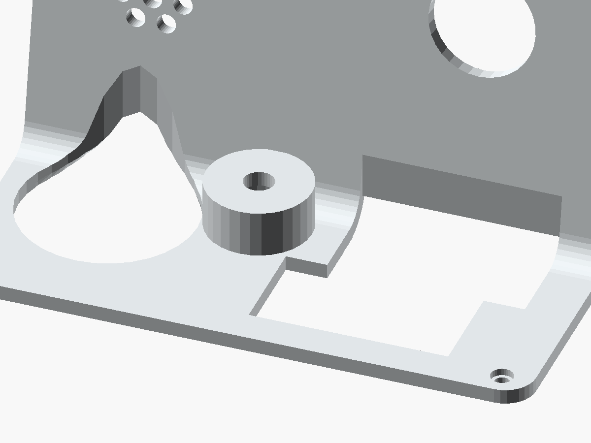
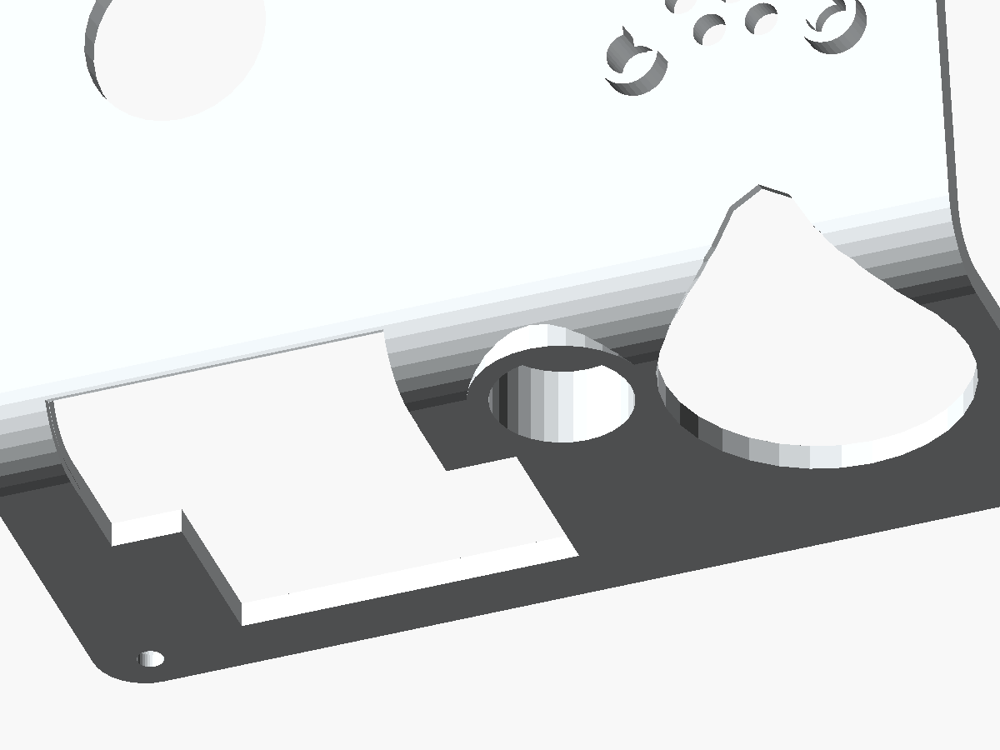
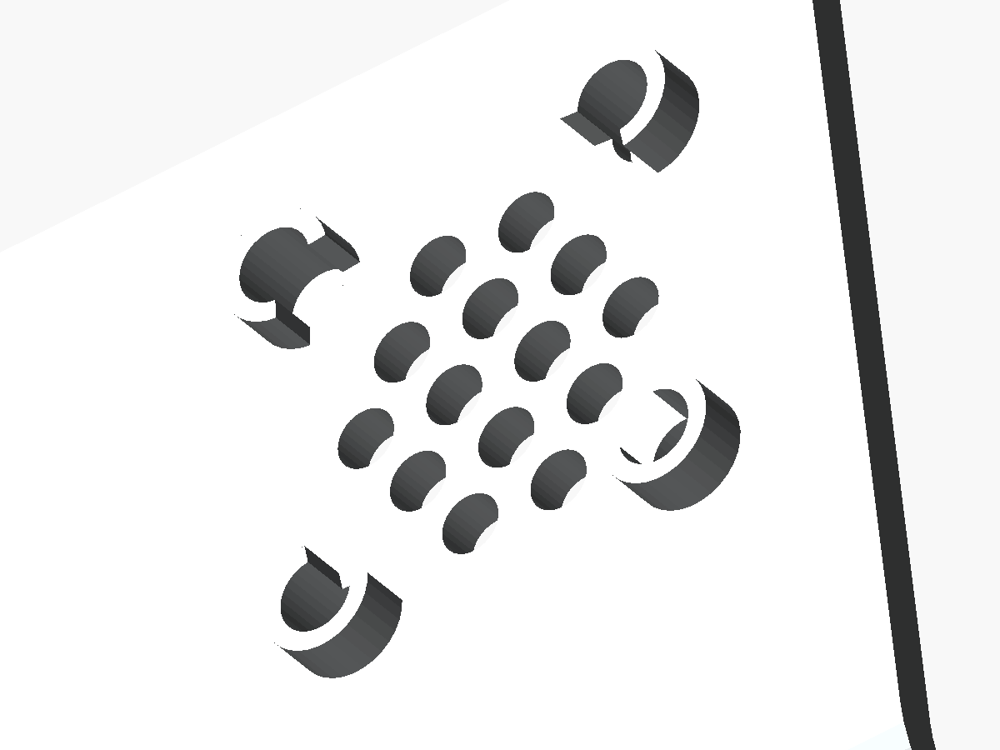
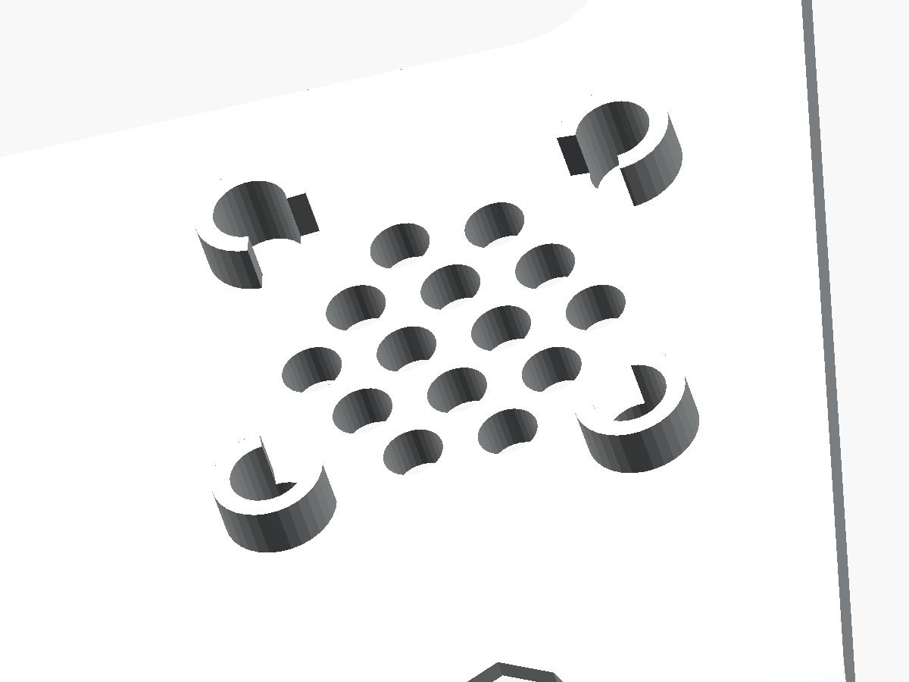

尺寸单位 mm。外壳 120 × 136 × 151.147；操作台外表面Z=21.6，比PCB顶面高11，内面Z=18.6。 麦克风圆罩顶Z=31、内径Ø16、声孔Ø6。屏幕、开关、后平台及PCB位置不变； 喇叭按前置耳重定位，正面贴近盖板内面。 点击下方三个总览视图中的两个点可量取该投影平面距离。
这是包络复核图，不是精确元件 CAD。侧视图叠加了不同 X 截面的投影，投影重叠不一定代表三维碰撞。
最终数字结论以 tests\carrier-clearance.scad 为准。开关、插接模块和功放上层端子仍需实物复核。
喇叭耳板尺寸按用户要求从图量取：以13 mm总厚度为标尺， 耳板至正面与耳厚各约3.1 mm，模型取3.2 / 3.2 / 6.6合计13。 盖板一体打印空心柱高3.4（3.2图量偏距加0.2正面间隙），柱内Ø4.7×深5.2孔装入Ø4.5×5圆柱嵌件， 使用M2.5×6。它们是比例估计，不是厂家新增标注；首件应松装复核。 空心柱已包含在盖板STL中，与盖板同色；不叠加独立黄色金属件。
PCB装配路径已补充验证：水平直落仍会被上方窄口挡住。 前角座内侧退让已向上贯通，采用左侧抬高25°、前偏1 mm下降至中心底面Z=35， 再摆平、后移1 mm并落座的路线；RTC和摇杆帽后装。 查看挡点、改动和可拖动的步骤示意。验证基于记录的模块包络，首件仍需试装。
绿色为实际阶梯形连通孔，蓝色为18×18键帽，虚线是每键20×20预留。 同排节距19.05，因此20宽开口会重叠0.95，不保留细梁；两排也重叠0.95。 外包47.15×39.05不能代替阶梯形开孔。PCB孔位与轴体位置不动。
摇杆保留Ø35圆孔，键盘保留每键20×20的阶梯形连通孔，不另开方槽。 只清除原孔切入圆弧、斜面后，盖板内侧剩余厚度不足1.2的薄片； 切削限制在盖板内侧最后1.2厚的范围，外侧孔轮廓不变。 盖板标称厚3；1.2是本模型的设计下限，不代表所有打印工艺都适用。
本次重导出修正了原网格的微米级短边：内侧清除体加入0.04布尔重叠量， 仍严格限制在内侧1.2厚，外侧0至1.8厚的开孔轮廓不变。 喇叭盲孔切削多边形错开半个分段角，孔径和深度不变；保留原有闭合及三位小数精度检查。


剖面穿过麦克风轴心：圆罩外径20.8、侧壁2.4、内径16，Ø14模块名义每侧留1。 顶厚3、内顶Z=28、模块最高Z=26.8，留1.2高度间隙。圆罩比平盖抬起9.4； 内腔贯通平盖，不留下挡住模块的底膜。
五排分别2 / 3 / 4 / 3 / 2孔，每排左右中轴对称，不要求四向旋转对称。 孔径3.8，左右中心距6、上下排距4.5；左右孔边间距2.2，上下交错孔最近边距约1.608。 阵列外包21.8×21.8，全部14孔仍在Ø23.5圆内，至圆边界最小余量约0.363；理论通孔面积约36.6%。 右图放大相邻两个孔，虚线标出中心。
平盖外面Z=21.6，距PCB顶Z=10.6为11；平盖内面Z=18.6，净空8。 轴体和摇杆通过各自窗口穿出，不能再要求它们全部低于平盖内面。 后部高度保持151.147，80°斜面与屏幕安装位置不变。
前部螺孔中心X=9/111、Y=11；Ø4.5沉孔深1.4，盖板剩厚1.6，贯穿孔Ø3。 底壳Ø4.7嵌件孔深5.2，Ø2.8螺钉尾孔深8.8，尾孔底Z=9.8。 后部同孔型、顶面高度不同；不是六角螺母槽。
载板94.5×117、R5、厚1.6；四个Ø3孔中心距84.5×107，中心距相应板边均为5。 底壳柱Ø7、柱高5；使用M2.5×6固定载板，不要与合盖M2.5×10混用。 图中坐标为载板本地坐标，装配坐标见下方总览。
屏幕PCB108.04×61.74、孔距101.9×54.9；保留左上、左下、右下三点，右上支撑删除。 窗口85.52×57.68、R6，相对PCB中心左移2.26。有效显示83.52×55.68， 圆角可能遮挡显示角部。PCB厚2、屏体厚3，盖板前留1。
尺寸沿屏幕法线测量，不是外壳竖直Z高度。盖板内面n=−3，屏幕前面n=−4， 屏体背面n=−7，PCB承托面n=−9；模组总厚5，前方另留1保护膜空间， 承托面到盖板内面共6。若实际膜厚超过1，应增加前隙并同步后移屏幕支撑。
方腔27.5±0.2、厚13±0.2；四孔Ø3、中心距23×23。 四个Ø7.1、高3.4的一体塑料柱，内有Ø4.7、深5.2的盲孔，装入Ø4.5×5圆柱嵌件； M2.5×6只穿约3.2厚的耳板，再拧入螺母约2.8，不穿整个13厚度。 Ø23.5只是前面网眼参考分布区，不是整圆通孔；剖面不代表气密声道。
后壁Y=136，孔中心X=28/48、Z≈75.573，孔径12、中心距20。 外头Ø13.8×厚2、螺纹Ø10.5×长14.5；壁厚2.4，螺母厚3。 螺母“14”按对边换算为保守外接圆16.17，图中虚线为该包络，不是额外通孔。
| 检查项 | 尺寸 / 结果 | 判定依据 |
|---|---|---|
| 图量方法 | 13 mm约118像素；正面偏距约28、耳厚约29像素 | 本地1191×1684原图，侧视背面/正面线中心约y=923/1041，耳后/前面约y=984/1013。13×28/118≈3.08、13×29/118≈3.19；考虑线宽，均取3.2，后段取6.6保持总厚13。不是独立标注。 |
| 四柱孔轴与喇叭孔 | 名义23×23孔距同轴 | 相对喇叭中心分别偏移±11.5。厂家直接标出竖向23，横向按方形对称解释，未单独标注；实物孔距与打印误差仍需核对。 |
| 柱高与耳板 | 3.2图量偏距 + 3.2耳厚 + 6.6后段 = 13；柱高3.4 | 柱高另加0.2正面间隙。盖板内面n=−3，喇叭正面n=−3.2；耳前面n=−6.4，耳后面n=−9.6。柱端承托耳板，不穿耳孔。 |
| 圆框与打印柱 | 内侧100°扇形避让槽，端面平直 | Ø7.1完整圆筒会侵入圆框；柱身朝圆框方向开100°扇形槽，避免圆弧切削产生渐薄尖端。相对保守Ø27.9圆框的柱壁间隙至少0.1、名义约0.3。其余柱壁名义厚1.2，开槽处不是完整环壁。金属嵌件相对该圆框的名义径向余量约0.063；打印误差与实物圆框必须复核。 |
| 盖板盲孔底 | 柱3.4 + 盖板3 − 孔深5.2 = 1.2 | 复用其他安装座的insert_socket(insert_depth)：Ø4.7×深5.2，螺母全部容纳在打印柱和盖板内，不裸露充当柱体。 |
| M2.5规格 | 当前为Ø4.5×5圆柱嵌件，不是六角螺母 | M2.5仅定义螺纹。DIN 934六角螺母通常对边5、厚2，不能放入本圆孔；热熔嵌件外径/长度也不由M2.5单独确定，核对采购件。 |
| 实际导出网格 | 四个空心柱与盖板属于同一连通实体 | tests\check_enclosure.py独立按X=14.5/37.5、沿面=18.5/41.5检查导出STL柱壁、完整孔腔、盲底、柱根及圆框避让，探针容差0.02。旧版只有盲孔而无柱壁的网格不能通过。 |
| 三维结构吻合与冲突 | 孔距23×23，柱端落座；按记录包络无实体干涉 | tests\carrier-clearance.scad检查含前圆框、3.2耳板、后方螺丝井及Ø5×高2.5螺丝头的完整喇叭包络，与盖板、底壳、功放接线、屏幕/载板模块、开关和Type-C相交。正面留0.2；槽侧间隙至少0.1。耳厚、阶梯、螺丝井为图量/近似，不能据此保证实物完全吻合。 |
| 螺丝 | M2.5×6，穿耳后约啮合2.8 | 不是穿过整个13 mm本体；螺丝头接受包络Ø5×高2.5，附加垫片会减少啮合。 |
| 安装顺序 | 先装柱内嵌件至端面齐平，再装喇叭 | Ø4.5嵌件不穿Ø3耳孔；孔深比嵌件长0.2，不能压到底后仍按齐平计算啮合。胶粘剂固化后轻拧，不硬压振膜。 |
图量估算，不是实物合格证： 原图侧视（正面朝下） 没有独立标注耳厚和阶梯深度。首件应先松装；若高度有差异，调整打印柱高度并重新检查孔底和圆框避让， 不要强拧，也不要把定位盲孔加深到后壁小于1.2。

直接读取导出STL；柱高3.4、外径7.1、内腔Ø4.7×深5.2、盲底1.2，内侧可见圆框避让槽。

塑料柱随盖板打印，是同一个网格；螺母、喇叭与螺丝未渲染，不使用独立黄色柱体替代。
| 部件 | 最高 Z | 状态 |
|---|---|---|
| 载板下面 / 顶面 | 9 / 10.6 | 1.6 板厚；四个 5 高柱 |
| 摇杆静止本体 | 23.0 | 图纸高度 12.4 |
| 平盖外面 / 内面 | 21.6 / 18.6 | 距PCB顶11；盖板厚3 |
| 排母叠加麦克风 | 26.8 | 排母8.7 + 上方模块7.5；至圆罩内顶留1.2 |
| 麦克风圆罩外顶 / 内顶 | 31 / 28 | 内径16、板径14、声孔6；抬起9.4 |
| 功放：排母+模块和自带端子 | 34.3 | 排母8.7 + 上方15（用户预设，含模块板） |
| 功放顶部接线空间 | 44.3 | 再加10；全平面保守覆盖 |
| ESP32 / 竖装 RTC | 30.6 / 50.6 | 20 / 40 高接受包络 |
| 未按下的轴体 + 键帽 | 36.05 | 轴高上限15.45 + 帽高12 − 插入2 |
| 开关外部全活动包络 | 最低50.70 | Ø28 × 突出12（未获尺寸图，暂定） |
| 现成摇杆帽完整扫掠包络 | ≤40.6 | 轴心周围Ø34、载板顶以上30；需核对实购物料 |
蓝色：PCB/模块；橙色：功放端子和接线；红色：开关内伸；紫色：扬声器和固定柱；绿色：操作件；灰色：外壳轮廓。
麦克风叠层：底板4、安装柱5、PCB 1.6、排母8.7、模块7.5， 最高点26.8。平盖降低到21.6，仅麦克风处抬起到31、圆罩内顶28，留1.2。 模块7.5和功放含端子15均从排母顶面起算，不重复添加模块PCB厚度。
开关外部与键帽竖直分隔约14.65 mm，仅对表列包络成立。开关法兰与拨动头尺寸仍待实物图核对。 后排按键孔和摇杆孔部分进入 R6 圆弧，切削已贯穿完整活动高度。 只清除斜面交接处盖板内侧不足1.2厚的残片，不扩大外侧孔形、不额外开槽。 除麦克风圆罩外，盖板全宽共用同一轮廓，功放空间没有缩减。
键盘是上下两排错位的阶梯形连通孔，不是外包矩形。 两排各39.05×20，下排左移8.10；只去掉内部细梁，保留两侧阶梯肩部。 47.15×39.05仅为包围尺寸。18×18键帽每侧留1， 按4.3行程检查全扫掠体并上下各留1 mm，不只检查静止位置。 合盖共四颗螺丝：顶部后排两颗、前部两颗；顶部原Y=110的两孔及底壳座已移除。
喇叭藏在盖板背后，正面五排2 / 3 / 4 / 3 / 2，共14个Ø3.8圆孔； 左右中心距6、上下排距4.5，全部位于Ø23.5圆内，不开整圆通孔。
摇杆帽购买现成件，不再提供自制帽模型。完整±30°扫掠须落在Ø34×高30保留包络内， 面板孔Ø35；静态帽直径不能代替运动范围检查。
| 部件 | 装配坐标STL | 同网格3MF | Y-up STL |
|---|---|---|---|
| 底壳 | bottom.stl | bottom.3mf | bottom-y-up.stl |
| 盖板 | lid.stl | lid.3mf | lid-y-up.stl |
参数化OpenSCAD源文件。 标准STL/3MF保留两件装配位置；盖板Y-up文件来自侧放打印姿态，并非新增零件。 STL包含盖板一体空心喇叭柱；打印后在柱内安装Ø4.5×5圆柱嵌件与M2.5×6螺丝。 切片时复核圆罩、屏幕支撑及喇叭定位盲孔是否需要局部支撑，首件须试装。
全部实体来自配套STL；喇叭安装柱是盖板的一部分，不叠加黄色金属件。 其他模块、开关和现成摇杆帽没有渲染，不用占位冒充精确器件模型。 点击可打开原图。